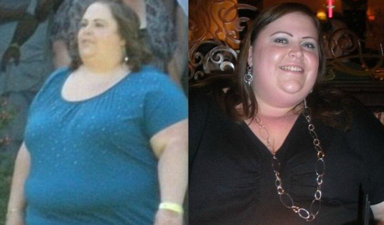
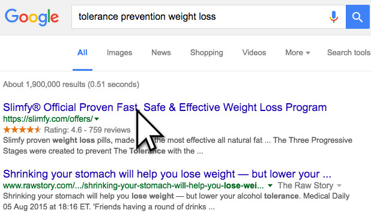

For the past couple of months our readers have been bombarding us with questions and going crazy about something called the “tolerance buildup suppressing method”. This new and controversial discovery - when applied correctly, has been reported to dramatically boost the weight loss process. A couple of products that employ this method have been featured on several popular TV shows, so we thought it was just advertiser hype. But seeing how thousands of women have been blogging and sharing their incredible success stories, via Facebook and Twitter, we decided to investigate.
Anna Cortes lost 77 kilograms and found herself.
One of our readers, Anna Cortes had been repeatedly warned by her doctor that her weight of 148 kilograms could drastically shorten her life, but then 3 years ago she was diagnosed with Type II diabetes. To make matters worse, the news came at a time when Anna's relationship with her husband seemed to be coming completely undone.
"I was extremely depressed and food was my only comfort," Anna explained.
"It was the only thing I felt I could turn to when everything around me was falling apart."
“When I started taking pictures at the beginning, I hated the way I looked.”

Even though she reached her highest weight in 2015, Anna says she struggled with weight all throughout her adolescent and teen years. She recalls being
"the fat one" in school and mindlessly eating to cope with the difficulties of not growing up with her biological father.
"But more than anything, my weight really got out of control when my stepfather died just after my wedding. By that time, I couldn't do a lot of things, like fit on an airplane seat, fasten seatbelt, or walk long distances without being tired and feeling pain in my joints."
"I missed out on snorkeling in the Caribbean for my honeymoon. I couldn't go hiking, zip lining, or even biking—all things I dreamed about," said Anna.
“I didn’t go to my nieces wedding, because I didn’t want to fly and I didn’t want my family and friends to see me. I think at that very moment, sitting on my couch alone, I knew I needed to make a change."
...And that's exactly what she did. In September of 2015, Anna vowed to lose weight ...without the surgery, which her doctor recommended.
Coincidentally, at the same time, speaking with a family friend who happened to be an endocrinologist, Anna learned about a specialized strain of products that eliminate obesity by targeting the
tolerance buildup.
It was then Anna realized how much of her weight gain wasn’t her fault.
“I just started crying,” said Anna. “And I couldn’t stop. I tried so hard to lose weight before, but nothing ever happened, and I blamed myself.”
Anna knew she was ready to make a change and the most important step was to choose the right product. One of those her friend was telling her about. She went to Google and searched the phrase her friend had given her -
“Tolerance Prevention Weight Loss"

She found a product called "Slimfy”. It turned out to be the only one formulated with The Tolerance Suppression Method in mind.
In terms of her diet, Anna swapped out white bread and refined pastas for whole grains and cut back on fast food and soda. She also bought a new scale, so she could weigh herself regularly. After just three months of Slimfy, Anna had dropped 36 kilograms and was full of energy. She started taking longer walks and going out more.
...I really had no idea how much this was going to change my life.”
As she lost more weight, Anna decided to make more positive changes in her life. She eventually left her job and her marriage, realizing that both were making her miserable. She began hiking, dancing, and even dating someone new. She just completed her first 5K recently.
In the end, Anna was able to lose over half of her body weight and throw away her diabetes medication. But most importantly she found herself and the happiness she always sought. All through one simple discovery.
 More on the method she used
More on the method she used
COMMENTS
Posted by Mark Coons
Good job Anna. You look gorgeous!!!Reply by Dana Zeals
omg you look amazing, where i can order this product?Posted by Michelle
Helen, i saw these products on oprah and rachael rays show. i have to say.. this stuff works and my results are unbelieveable thank you so much for putting up this article and doing the test.Posted by Cara
I have been procrastinating for 2 months now on losing weight and today is the day I am gonna take action and get started. Love, CaraPosted by Michael
Hey, Helen, I saw the report on TV and realized the Advanced 3 stage formula combo WORK EVEN BETTER FOR MEN who want to lose weight!!! I am definitely going to try the trial offers before they expire! Thanks for sharing the tips and you should mention how great this diet is for us men too, don't forget it next time. LOL!Posted by Laura
There is a big stir going on these days about this weight loss system. I am seeing all over.. I am going to give it a try. Thanks for the links.Posted by Dorothee
My daughter has had weight issues since she was a baby and the doctor says we really need to get her on a diet so she can lose 8 Stone. I really hope this is the answer. Thank you Fit Mom Daily.Posted by Rhia
My husband and I both need to lose weight because we are going to be seeing family we haven't seen in 25 years. Already ordered it and we are both going to try this out, thanks. - The Higgins familyPosted by Stephen
I've been seeing this stuff all over. I even heard my mom talking about this stages a few days ago since one of her friends has lost like 8 lbs in the first 15 days. I definately have to try this, thanks. P.S. – for all male readers out there, I found out that this diet works for anyone. so give it a try!Posted by Nancy
This stuff is amazing! My best friend Jessica did the same diet and lost an incredible amount of weight. i couldn't believe it and had to do some research on my own which is how I found this news article. thanks so much!!Posted by Amy
I was a bit skeptical when I first read about this but as I researched more and more I found out that this advanced formual is indeed what Rachael Ray and many scientists say it is. It's one of the secret anti-aging products that nobody seems to want to share. I wouldn't be surprised many celebrities know about this. I'm so excited! I cannot wait for them get here!Posted by Wanda
A friend of mine did this diet and recommended it to me 3 weeks ago. I ordered the products and received them within 3 days (although I didnt get the discounted shipping). The results have been incredible and I can't wait to see what weeks 3 and 4 bring.Posted by Nicole
This is an absolutely amazing breakthrough. My resultes are 19 lbs in a month on stage two !Posted by Sam
I stand by this diet. I tried this diet a months ago and I can't say enough about it. This diet helped me lose 28.5 lbs therought whole program and it completely changed my life. I highly recommend this diet to ANYONE that's looking to shred unnecessary fat.